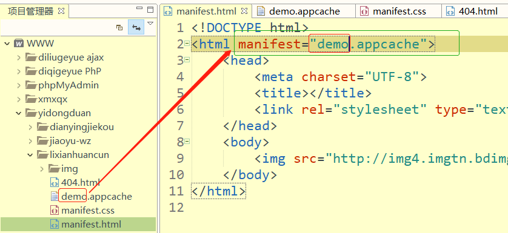
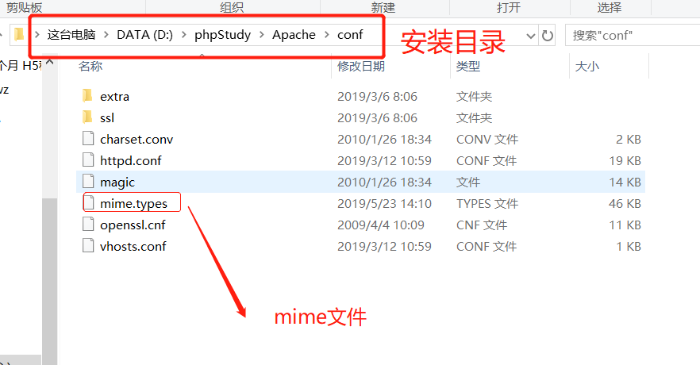
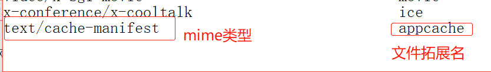
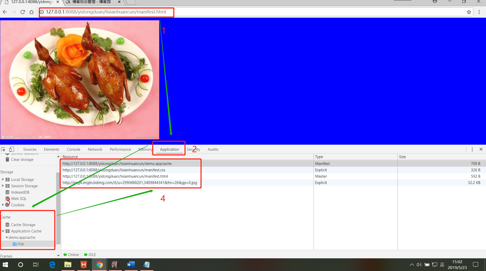

离线缓存 application cache
1. 什么是离线缓存：
离线缓存可以将站点的一些文件缓存到本地，它是浏览器自己的一种机制，将需要的文件缓存下来，以便后期即使没有连接网络，被缓存的页面也可以展示。
例子：比如我们在手机或电脑上访问一个网页，下一次访问即使不连网也可以访问，因为当我们第一次访问时候，浏览器已经把此时页面给保存到本地了。
2. 离线缓存的优势：
1. 在没有网络的时候可以访问到缓存对应的站点页面，包括 html，css，img等文件
2.在有网络的时候，浏览器也会优先使用已离线存储的文件，返回一个200(from ache)头。这跟http的缓存使用策略不同的
3.资源的缓存可以带来更好的用户体验，当用户使用自己流量上网时，本地缓存不仅可以提高用户访问速度，而且大大节约用户的使用流量。
3. 实现离线缓存：
1. 在需要缓存的html(网页) 的根节点添加属性 manifest属性 属性值是一个 appcache appcache 是一个控制缓存文件。demo.appcache要给manifest.html 中属性 manifest=“demo.appcache” demo要一样

2. 在同目录下创这个 .appcache 文件 并添加配置项
4.appcache文件的内容格式
需要注意：前两个是必写，后两个是可选，在这里面 # 是注释的意思
CACHE MANIFEST
# 1.0版本号 添加配置项
CACHE:
#需要缓存的文件
http://img4.imgtn.bdimg.com/it/u=2990488201,3409844341&fm=26&gp=0.jpg
http://127.0.0.1:8088/yidongduan/lixianhuancun/manifest.css
NETWORK:
#每次向网络请求的文件也是不缓存的文件
*
#*代表除了上面的缓存文件其它不缓存
FALLBACK
#无法建立英特网请求 而打开的页面
404.html
5. 在服务端将 .appcache 文件的mime类型配置成
text/cache-manifest
下面以phpstudy为例：

打开mime.types 文件在后面添加

6.在网页打开 manifest
 现在就可以看到我们缓存的文件有 css，img，html等
你可以试着断网是否能访问到这个img，这个图片是网上图片需要网络加载，如果断网看看图片是否还能加载出来。
作者：晋飞翔
手机号(微信同步)：17812718961